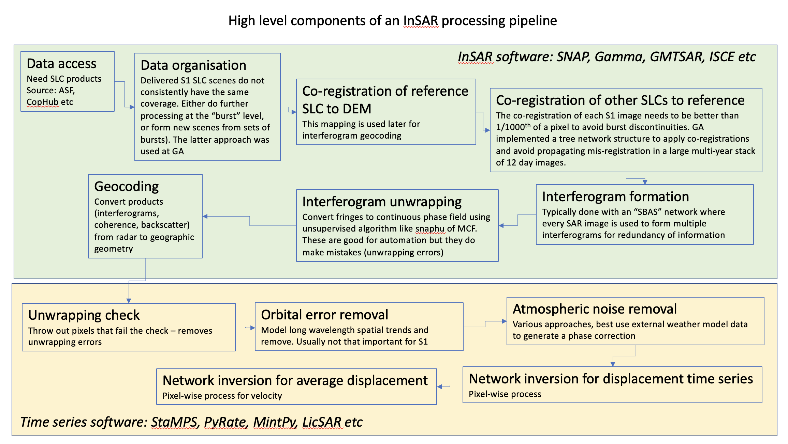

4 Pipeline

4.1 Processing SAR
4.1.1 Data Access
Need SLC products Source ASF, CopHub, etc.
4.1.2 Data organisation
Delivered S1 SLC scenes do not consistently have the same coverage. Either do further processing at the “burst” level, or form new scenes from sets of bursts). The latter approach was used at GA.
4.1.3 Co-registration of reference SLC to DEM
This mapping is used later for interferogram geocoding
4.1.4 Co-registration of other SLCs to reference
The co-registration of each S1 image needs to be better than 1/1000th of a pixel to avoid burst discontinuities. GA implemented a tree network structure to apply co-registrations and avoid propagating mis-registration in a large multi-year stack of 12 day images.
4.1.5 Interferogram formation
Typically done with an “SBAS” network where every SAR image is used to form multiple interferograms for redundancy of information
4.1.6 Interferogram unwrapping
Convert fringes to continuous phase field using unsupervised algorithm like snaphu of MCF. These are good for automation but they do make mistakes (unwrapping errors)
4.1.7 Geocoding
Convert products (interferograms, coherence, backscatter) from radar to geographic geometry
4.2 Time Series Processing
4.2.1 Unwrapping check
Throw out pixels that fail the check – removes unwrapping errors
4.2.2 Orbital error removal
Model long wavelength spatial trends and remove. Usually not that important for S1
4.2.3 Atmospheric noise removal
Various approaches, best use external weather model data to generate a phase correction
4.2.4 Network inversion for displacement time series
Pixel-wise process
4.2.5 Network inversion for average displacement
Pixel-wise process for velocity